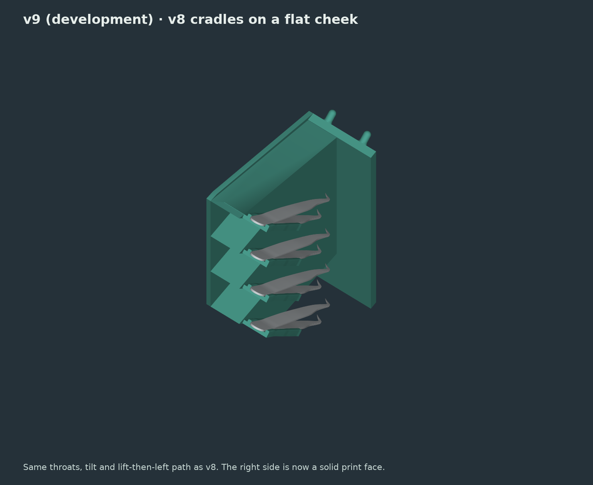
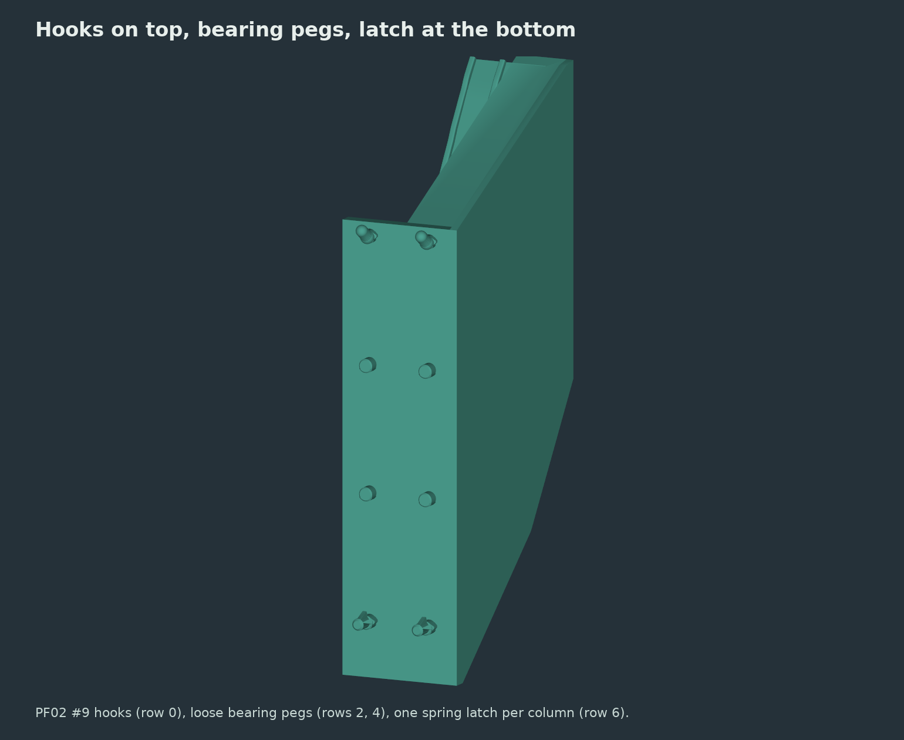
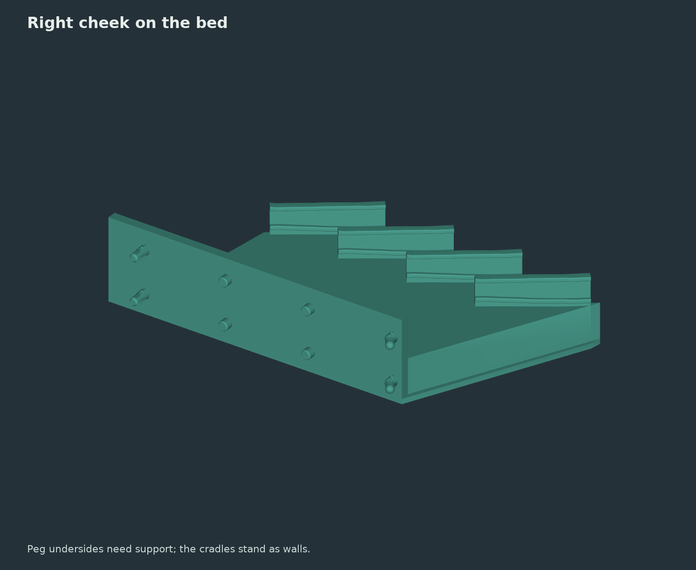

← Solder station · Current v8 station
v9 · DEVELOPMENT · not yet physically tested · same four v8 throats
v8's cradles, printable on their side.
Development build. The first v9 print started on 2026-10-01; fit, retention and print quality are untested. Use the v8 page for the current design. This page will be updated with the print result.
Laid on its right cheek, v8 touched the bed only along the 5.4 mm edge of its receiver plate. v9 keeps every tool-facing surface of v8 identical: the cradle floor under the lower arm, both guide rails, all clearances, the 40° tilt, the heel positions and the lift-5-mm-then-left removal path. Only the cradle floors and right-side webs are lengthened in +X, away from the tool and its exit path, to meet a solid 3 mm right cheek. That cheek is the print face: 17,450 mm² on the bed.

A new mount: hooks on top, a latch at the bottom
The v7/v8 mount clamped the board at 14 points with interference locators. v9 uses the peg layout from the fit-coupon study: hooks on the top row only (PF02 coupon 9: side ribs +0.50 mm, tongue clamp 0.49 mm), loose conformal bearing pegs on rows 2 and 4 that carry weight without gripping, and one spring latch per column on the bottom row (1.2 mm hook, 60° return, turned 90° so it flexes in the print's layer plane). Less clamping, so the station stays easy to reposition.

Downloads
Print the v8 single-throat test piece first if you have not: the throat is unchanged.
Pegs need support underneath. The development print used modelled two-wall supports with a bridged deck under each peg (0.1 mm Z, 0.25 mm XY gap), not slicer supports; see the source.
Inspect the model

Checks (geometry only)
| Tool mating vs v8 | Zero volume difference from v8 everywhere left of X = 0.5 mm in front of the board; tools stay at least 3 mm from all added material over the full removal path |
|---|---|
| Board sweep | Bearing pegs clear the board at all 353 sampled insertion poses; the latch needs 1.43 mm of fold against its 1.8 mm flex gap |
| Host envelope | 0 mm³ of host material outside the allowed insertion volume |
| Print bounds | 227 × 117.8 × 48.8 mm on the right cheek |
These are CAD and sampled-motion checks, not a physical fit, load or wear rating.
Dimensions and check results · Source (development branch) · Peg fit-coupon study